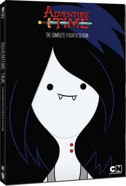

The genetics
This Adventure Time episode is a fable about creating life and shaping character. Princess Bubblegum, the kingdom's scientist-ruler, makes an immortal heir from her own DNA, intending to secure her people's future; Goliad, however, learns from the first example of authority she sees, Jake shouting at children, and turns into a would-be tyrant who believes the strongest should control the weak. Bubblegum's remedy is another creation, Stormo, grown from Finn's DNA, who, she explains, has inherited Finn's heroic qualities and therefore sacrifices himself to contain Goliad. The episode thus sets upbringing against inheritance: one creature is corrupted by what she observes, the other is good because of whose DNA he carries. Bubblegum is a well-meaning but overconfident creator whose experiment nearly backfires. Critics read the episode as a story about absolute control and free will; the claim that heroism passes through a single hair's DNA is a comic simplification of heredity.
How genetics is portrayed
- Overall portrayal of genetics
- mixed One DNA creation becomes a would-be dictator, the other a self-sacrificing hero; the episode ends tenderly with Finn embracing Stormo as his son, balancing the danger of creating life with its good.
- Outcome of the genetic intervention
- mixed Goliad turns into a mind-controlling tyrant who wrecks the castle, but Stormo, the second creation, contains her permanently by sacrificing himself.
- Princess Bubblegum
- hero Aim: benevolent (positive). The ruler of the Candy Kingdom (affiliation government) creates Goliad from her own DNA to give her people an eternal leader and, when Goliad turns tyrannical, creates Stormo from Finn's DNA to stop her; the episode treats her sympathetically, as tired and overconfident rather than wicked.
The story
Shaken by a recent brush with death, Princess Bubblegum tells Finn and Jake that she has used science and her own DNA to create Goliad, a giant pink sphinx meant to rule the Candy Kingdom forever after her. Exhausted after 83 hours of teaching her about leadership, she asks the boys to show Goliad the world. At a preschool, Goliad sees Jake shout down unruly children and concludes that ruling means forcing others to obey; she reveals a third eye with which she can control minds and declares that the world would be perfect if she controlled everyone. When Bubblegum thinks of dismantling her, Goliad reads her mind and begins destroying the castle. While Finn and Jake distract her, Bubblegum creates a second sphinx, Stormo, from a hair plucked from Finn. Stormo refuses to join Goliad and locks her in an endless psychic duel that keeps her in check, and Finn realizes that Stormo is like a son to him.